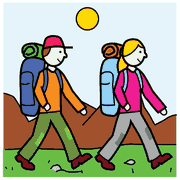
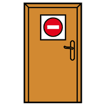
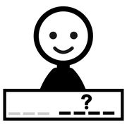
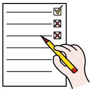
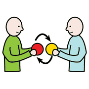

Secondo incontro, modulo 11
Storie sociali con l'IA
Brevi racconti che preparano a una situazione nuova, e come l'intelligenza artificiale può aiutare a scriverne una prima bozza.
una gita,
il primo giorno,
una visita
Che cosa sono
Racconti brevi e illustrati che descrivono in anticipo una situazione nuova, con parole semplici e rassicuranti. Nascono con Carol Gray (1991) nell'ambito dell'autismo, ma servono a chiunque affronti una novità: trasformano l'ignoto in noto.

la gita sono tranquillo
sono tranquillo la maestra è con me
la maestra è con meIl ruolo dell'IA
 computer
computer scrivere
scrivere aiutare
aiutareStrumenti come Claude, Gemini o ChatGPT preparano in pochi secondi una bozza personalizzata: utile quando servono più storie per bambini e momenti diversi. Ma la bozza è solo l'inizio: il valore resta la conoscenza che l'insegnante ha del bambino.
sempre!
Attenzione ai dati

privato
nome foto
fotoL'IA non conosce il bambino vero. Ogni bozza va letta, controllata e adattata da chi lo conosce.
Che cosa controllare nella bozza
 leggere
leggere controllare
controllare
correggere- Linguaggio adatto all'etàFrasi brevi, presente indicativo, tono rassicurante.
- Sequenza logicaLe cose accadono in un ordine prevedibile.
- Niente dettagli che spaventano«Potresti avere paura» diventa «andremo insieme, la maestra sarà con te».
Adattare la storia

cambiare pittogrammi
pittogrammi bambino
bambino- Aggiungere dettagli veri: luoghi, orari, persone.
- Affiancare i simboli alle frasi chiave (ARASAAC è gratuito).
- Leggerla più volte, a partire da 3-5 giorni prima.
- Condividerla con la famiglia, per continuità tra scuola e casa.
prova
in diretta
Un esempio di richiesta
scrivere domandacomputer
domandacomputer